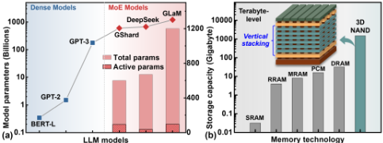
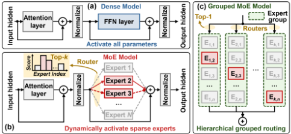
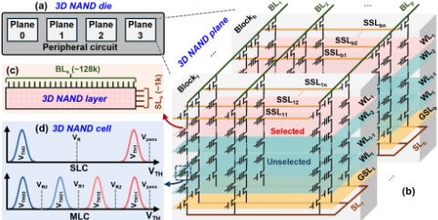
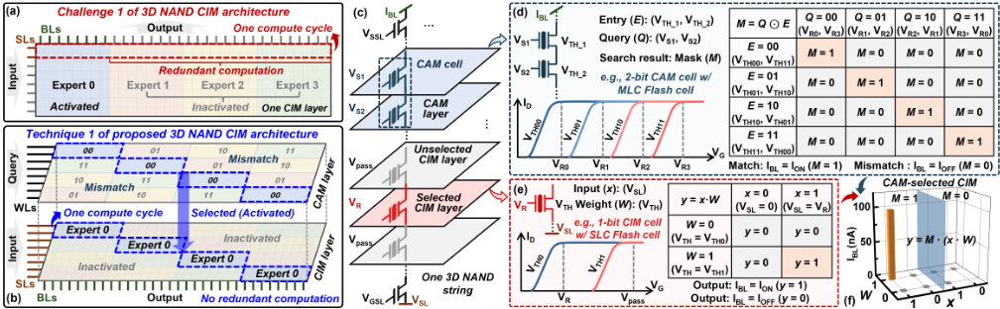
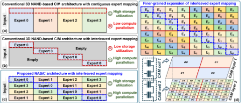
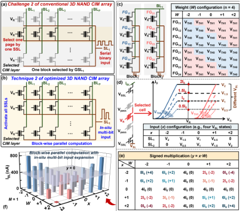
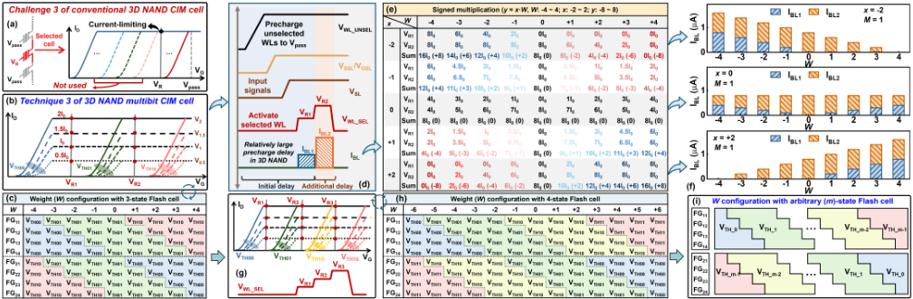
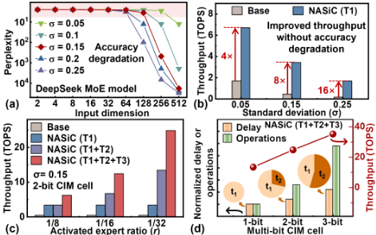
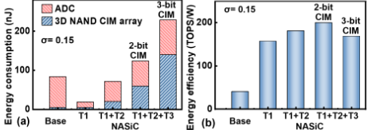
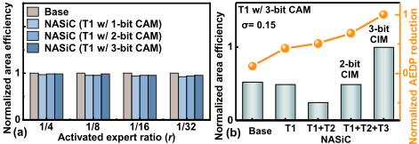

NASiC：面向高效端侧 Mixture-of-Experts LLM 推理的基于 3D NAND 的 CAM 选择多比特 CIM 架构
MoE 大模型通过稀疏激活专家实现参数扩展，但端侧部署需存储全部专家参数，内存容量成为核心瓶颈；3D NAND 虽具备 TB 级存储密度，但现有 3D NAND CIM 架构面向稠密负载设计，面对动态稀疏的专家激活存在冗余计算、并行度受限与 SLC 存储浪费三大问题。论文提出 NASiC 架构，将存储专家标识的 CAM 层与存储权重的 CIM 层集成于同一 3D NAND 串，通过 y=M·(x·W) 的原生门控机制在单个计算周期内融合专家选择与计算；并配套提出块级并行 thermometer 编码、原位有符号多比特输入扩展与多比特 CIM 单元三项电路级优化。实验显示相对 A100 GPU、Cambricon-LLM、AiF 及传统 3D NAND CIM 基线，吞吐率提升 4~114.8 倍、能效提升 3.9~70 倍，AEDP 降低 3.5~8.3 倍。该工作属于器件-电路-架构跨层协同的 AI 加速器研究，评估基于 SPICE 仿真与系统级建模，与本团队的内存/互连 IP RTL 设计与验证技术栈无直接交集。
MoE 模型端侧部署需存储全部专家参数，存储容量是主要瓶颈；3D NAND 是唯一具备 TB 级容量的成熟存储技术，但现有基于 3D NAND 的 CIM 架构面向稠密计算设计，难以适配 MoE 动态稀疏专家激活：高纵横比页面布局导致对所有并行专家的冗余计算、3D NAND block/SSL 结构与串行二进制输入扩展限制计算并行度、仅使用 SLC 单元浪费多级存储能力，难以高效支撑端侧 MoE 推理。
提出 NASiC 架构，包含三项技术：T1 将存储专家标识的 CAM 层与存储专家权重的 CIM 层原位集成于同一 3D NAND 串，利用串的限流特性与多级存储能力设计紧凑多比特 CAM 单元，匹配信号 M 与 CIM 计算结果通过 y=M·(x·W) 原生门控融合，在单周期内完成专家选择与计算，配合交错式专家映射消除冗余计算；T2 提出适配 3D NAND block 结构的改进 thermometer 编码与双 block 互补配置实现有符号权重，通过调制 VSL 实现原位有符号多比特输入扩展，实现块级并行计算；T3 将 CIM 单元从 SLC 扩展到 3-state/4-state 乃至任意 m-state Flash 单元，配合单周期内多读电压脉冲的计算时序，提升存储密度。评估基于 65nm FG 晶体管 Verilog-A 紧凑模型的 SPICE 仿真与系统级建模。
相对 NVIDIA A100 GPU / Cambricon-LLM / AiF / 传统 3D NAND CIM 基线（Base），吞吐率提升 5×/5.5×/6.8×/4× 至 85×/93.4×/114.8×/68×
相对 GPU / Cambricon-LLM / Base，能效提升 53×/17.5×/3.9× 至 70×/23×/5.1×
采用细粒度交错专家映射的 T1 架构，随 Flash 电流标准差 σ 增大，相对 Base 吞吐率提升从 4× 增至 16×
T1~T3 全配置下综合 area-energy-delay product（AEDP）相对 Base 降低 3.5×~8.3×
3-bit CAM 配置下即使专家激活比例低至 r=1/32，面积效率损失可忽略（<0.05）
2-bit CIM 能效优于 3-bit CIM，后者因 ADC 能耗与时延开销快速增长出现性能-能效权衡
区别于以往将 MoE 参数卸载到 3D NAND 再按需搬运到 GPU 计算的 von Neumann 方案，以及面向稠密负载、仅用 SLC 单元的现有 3D NAND CIM 设计，NASiC 首次将 CAM 式专家选择与 CIM 计算原生融合在同一 3D NAND 串内，实现单周期专家激活与计算；并通过架构-电路-器件跨层协同（块级并行编码、原位多比特输入扩展、多比特 CIM 单元）同时提升计算并行度与存储利用率。
相关度级别：low
命中能力域：无明显对应
理由：论文属于基于 3D NAND Flash 器件的存算一体（CIM）AI 加速器架构研究，核心贡献在器件-电路-架构跨层协同设计（CAM 选择单元、块级 thermometer 编码、多级 Flash CIM 单元），评估手段为 SPICE 仿真与系统级建模。对照团队七个能力域：论文不涉及内存/互连 IP 的架构与 RTL 实现（2.1/2.2），不涉及时序 sign-off 与物理实现（2.3），无 UVM/覆盖率/仿真加速/Emulation 等验证方法学内容（2.4/2.6），无形式验证（2.5），也无 EDA/验证自动化与 AI 辅助流程（2.7）；其 3D NAND 器件层技术与团队 LPDDR/DDR5/MRDIMM/HBM4/UCIe 等 DRAM 接口与互连 IP 产品线无直接交集，故判定基本无关联。
建议动作：仅了解结论
arXiv:2605.23294v1 [cs.AR] 2026年5月22日
NASiC：面向高效端侧混合专家（MoE）大语言模型（LLM）推理的基于3D NAND的内容寻址存储器（CAM）选择多比特存内计算（CIM）架构
Weikai Xu 1 , Meng Li 2,1,3 *, Shuzhang Zhong 2,1 , Tianyang Luo 1 , Dongxue Zhao 1 , Ling Liang 1,3 *,
Zongwei Wang 1,3 *, Qianqian Huang 1,3 , Yimao Cai 1,3 , Ru Huang 1,3 *
1 北京大学集成电路学院，中国北京；2 北京大学人工智能研究院，中国北京；3 北京集成电路高端创新中心，中国北京；
*通讯作者：ruhuang@pku.edu.cn; meng.li@pku.edu.cn; wangzongwei@pku.edu.cn; lingliang@pku.edu.cn.
混合专家（Mixture-of-Experts, MoE）模型已成为在不按比例增加计算成本的前提下扩展大语言模型（Large Language Models, LLMs）的最先进范式。然而，由于存储所有专家参数需要巨大的内存开销，其在设备端部署面临关键挑战。基于3D NAND的存内计算（Computing-in-Memory, CIM）架构独特地兼具高存储容量与减少数据搬运的优势，但其并不适合具有动态稀疏专家激活特性的MoE模型，导致有效计算并行度下降，同时闪存（Flash）单元的多比特存储能力也未被充分利用。在本工作中，我们提出了一种基于3D NAND的内容可寻址选择式CIM架构，命名为NASiC，该架构专为MoE模型量身定制。通过利用3D NAND技术固有的串（string）结构，NASiC将通过基于内容可寻址存储器（Content Addressable Memory, CAM）的掩码机制实现的动态专家选择与通过CIM实现的激活专家计算融合到单个计算周期中，从而消除冗余计算并提升计算并行度。此外，电路级优化与多比特CIM单元同所提出的NASiC架构进行协同设计，具备原位有符号多比特输入与权重扩展的块级并行计算特性，显著提升了NAND CIM阵列的吞吐量与能效，以及高密度3D NAND技术在MoE模型中的利用率。大量实验结果表明，NASiC相比最先进设计实现了4 ∼ 114.8×的性能提升和3.9 ∼ 70×的能效提升，同时保持高精度，展现了其在高效设备端MoE LLM推理方面的巨大潜力。
基于Transformer的大语言模型（LLM）在对话系统、文档摘要、代码生成和多模态推理等各类生成式AI应用中取得了显著成功 [1-7]。LLM能力的不断提升主要得益于模型参数持续扩展至万亿级，但这也给计算效率带来了巨大挑战 [8-10]。为解决这一问题，混合专家（MoE）模型通过增加专家参数数量并对其进行稀疏激活来实现参数扩展，从而避免了稠密模型中计算成本成比例增加的问题，并使其成为最先进LLM中的主流架构 [11-16]（图1a）。尽管MoE模型已被证明具有与稠密模型相当甚至更高的性能，但其设备端部署仍面临存储所有专家参数所需内存过大的关键挑战 [17-19]。在当前的各类存储技术中，

3D NAND独具优势地提供了最高的存储容量，其通过垂直堆叠数百层且每个Flash单元具备多级存储能力，可达到TB级容量，这是设备端MoE部署所必需的 [20-22]（图1b）。以往基于冯·诺依曼架构的工作将MoE参数卸载到3D NAND中，随后按需取入GPU内存进行计算，这种大规模数据搬运带来了巨大的功耗和延迟开销 [23-25]。
近年来，一些工作研究了基于3D NAND结构的存内计算（CIM）架构，通过在存储阵列内部实现通用矩阵向量乘法（GEMV）运算来减少数据搬运 [26-29]。然而，现有的基于3D NAND的CIM设计大多很少利用3D NAND的独特结构来与MoE模型进行协同优化，因此在实现高效的设备端MoE推理方面仍面临重大挑战。挑战1：由于每个3D NAND CIM层具有高纵横比的矩形布局，当前的3D NAND CIM架构难以适应动态稀疏的MoE工作负载，导致冗余计算和有效计算并行度的下降。挑战2：受3D NAND块结构和低效多比特输入扩展策略的制约，当前的3D NAND CIM电路在计算并行度方面存在根本性的下降。挑战3：当前的3D NAND CIM技术仅采用单级Flash单元，未能充分利用3D NAND技术固有的高容量优势，因而难以存储MoE模型参数。因此，当前的基于3D NAND的CIM设计仍难以高效支持兼具海量存储需求和稀疏计算工作负载的MoE模型，限制了其在边缘侧的实际部署。
在本工作中，我们提出了NASiC，一种基于3D NAND的内容寻址存储器（CAM）选择式多比特CIM架构，专为满足MoE模型对高密度存储和稀疏计算的需求而设计。NASiC解决了上述挑战，其主要贡献可归纳如下：
大语言模型（LLM）参数的持续扩展一直是性能提升的主要驱动力，但这也导致计算成本成比例地增加，其中主要由前馈网络（FFN）层主导 [1-3, 8]。如图2(a)所示，传统的稠密模型对每个输入token都会激活全部FFN参数，随着模型规模的增大，这造成了显著的计算瓶颈。混合专家模型（MoE）旨在用一组N个并行的专家替换单一的稠密FFN层，对于每个输入token，路由器（router）仅动态激活其中稀疏的专家子集（即topk个专家）[11-13]（图2b）。MoE模型有效地将总参数量与计算成本解耦，使其能够扩展至数万亿参数，同时保持规模小得多的稠密模型的计算开销 [14]。近年来，一些面向高效硬件映射的MoE模型变体被提出，例如分组MoE模型 [30]，其将专家组织成不同的组（例如k个组），并从每个组中选择一个专家（图2c）。然而，所有MoE模型都面临一个共同的根本挑战：存储所有专家需要巨大的存储容量，这是在资源受限的边缘设备上部署的主要瓶颈。此外，最先进的MoE模型对每个token仅激活很小的专家子集（例如Switch Transformer [15]中的top-1和NLLB-MoE [16]中的top-2），这导致计算负载高度稀疏，为高效硬件加速带来了挑战。


As mentioned above, the massive storage requirement of MoE models necessitates a memory technology that offers unparalleled density. Among the memory technologies, 3D NAND is the only mature and commercially available technology that meets this demand, offering terabyte-level storage capacity achieved through 3D vertically stacking with multi-level storage capability [31, 32]. Recently, 3D NAND-based CIM architectures have garnered significant attentions for LLM acceleration [27-29]. As shown in Fig. 3ab, the 3D NAND die is composed of multiple planes, and one plane is composed of multiple blocks, each sharing a common ground select line (GSL) and source line (SL). Within each block, a set of vertically stacked Flash cells in series forms a string, which is connected to one bit line (BL) via a string select line (SSL) at the top, and to the common SL via the GSL at the bottom. Horizontally, all Flash cells on the same physical layer share a common word line (WL), where the cells selected by one SSL within a single block constitute a page. During computation, one layer of 3D NAND is activated at a time, and the GEMV operation is implemented (Fig. 3c).
Generally, two primary CIM designs are employed for 3D NAND, where inputs are applied to either BLs or SLs and the current is sensed on SLs or BLs, respectively. In 3D NAND structure, the number of BLs which defines the page size (e.g., 128k) is far greater than the number of SLs which is equal to the number of blocks (e.g., 1k) [31]. Besides, the input dimension is inherently constrained by device non-ideal effects, such as the device-to-device variation, and is thus even largely smaller than the number of SLs for practical applications. Consequently, the SL-input scheme leverages the massive number of BLs as the output dimension can achieve higher effective computational parallelism for 3D NAND-based CIM [33]. Moreover, the Flash cell can be programmed to multiple non-overlapping
SLb CAM layer threshold voltage (VTH) states from single-level cell (SLC) to multilevel cell (MLC) (Fig. 3d), and even higher-density cells, making it a promising candidate for on-device MoE deployment [32].

MoE。传统3D NAND CIM架构主要利用其高计算密度，面向稠密计算负载而设计[26-29]。然而，这类架构在处理MoE模型的动态稀疏负载时存在固有的低效问题：在MoE模型中，稠密的FFN层被多个并行的窄专家所取代，且各专家权重矩阵的维度相对接近[34]。图4(a)展示了基于传统3D NAND CIM架构的MoE硬件映射，采用一个简单的top-1路由示例，即从四个专家（即专家0 ∼ 3）组成的集合中激活一个专家（例如专家0）。由于每个3D NAND CIM层采用高纵横比的矩形布局，多个专家需要沿细长延伸的页方向连续映射并存储，且输入信号被广播至同一层中的所有并行专家。因此，CIM操作会在所有专家上执行，导致由MoE负载与硬件架构之间的失配所引发的大规模冗余计算。此外，如前文所述，CIM的实际输入维度受到器件非理想效应的严重制约，迫使单个被激活专家的计算在多个周期内串行执行。因此，传统3D NAND CIM架构难以高效处理动态稀疏的MoE负载，严重降低了有效计算并行度与能效。
3.1.2 技术1（T1）：面向稀疏MoE负载的基于3D NAND的CAM选择式CIM架构。为解决传统3D NAND CIM架构的冗余计算难题，我们提出了一种新颖的基于3D NAND的CAM选择式CIM架构——NASiC，并采用交错式专家映射策略，如图4(b)所示。NASiC架构的核心设计是将通过内容寻址存储器（CAM）实现的专家选择与通过CIM实现的专家计算融合到单个计算周期中，从而在硬件层面根除冗余计算。通过利用3D NAND特殊的串（string）特性，NASiC架构实现了CAM单元与CIM单元在同一3D NAND串上的原位集成，如图4(c)所示。位于3D NAND串上部的CAM层用于存储每个专家的唯一标识符（即条目，entry），位于下部的CIM层则存储该专家的权重参数。当MoE路由器选择某个专家标识符（例如专家0对应"00"）时，该标识符作为查询信号被广播至所有块的CAM层（图4b），从而选中与被激活专家相关联的CIM部分进行计算。
如图 4d 所示，每个内容寻址存储器（CAM）单元由 3D NAND 串上的两个串联浮栅（FG）晶体管构成。CAM 功能用于选择并激活相应的存内计算（CIM）部分，这本质上是一种逻辑运算。因此，我们利用 3D NAND 串固有的限流特性以及 Flash 单元的多电平存储能力，设计了一种紧凑的多位 CAM 单元，以降低 CAM 组件的硬件开销。作为示例，我们以 MLC Flash 单元为例说明 2 位 CAM 单元的设计。2 位条目以两个 FG 晶体管各自的 VTH 状态（VTH1、VTH2）形式存储，而 2 位搜索查询则相应地以栅极电压（VS1、VS2）的形式施加到这两个晶体管上。搜索结果定义为掩码（𝑀），其有效地在 2 位条目与查询之间执行一种类似 XNOR 的逻辑运算，详细的编码与匹配方案如图 4(d) 中的表格所示。只有当搜索查询与存储条目完全一致时，两个串联晶体管才会同时导通，被选中的 3D NAND 串才会流过高电流，表示匹配状态（即 𝑀 = 1）。查询与条目的所有其他组合都会使 3D NAND 串处于非导通状态，表示失配状态（即 𝑀 = 0）。我们首先在同一 3D NAND 串上用 SLC Flash 单元实现了一个标准的 1 位 CIM 单元（图 4e），该单元执行输入（𝑥）与存储权重（𝑊）之间的乘法运算。所提出的 NASiC 架构的关键创新是图 4(f) 所示的原生门控计算机制。通过共享同一 3D NAND 串，在位线（BL）上感知到的最终输出（𝑦）电流（IBL）即为 CAM 的选择信号（即 𝑀）与 CIM 计算结果（𝑥 · 𝑊）之间的逻辑与，即 𝑦 = 𝑀 · ( 𝑥 · 𝑊 ) 。该设计确保只有被 CAM 层选中（𝑀 = 1）的专家，其 CIM 计算结果（𝑥 · 𝑊）才能贡献到 IBL；否则，对于所有失配的专家（𝑀 = 0），无论其计算结果如何，计算都会被原生门控，这使得能够在单个

计算周期（图 4b）内并行激活输入。因此，NASiC 架构消除了冗余计算，并显著提升了 MoE 推理的有效并行度与能效。
需要注意的是，若基于传统 3D NAND CIM 架构采用交错专家映射策略，同样可以通过分布单个专家（例如专家 0）来实现高计算并行度，如图 5(ab) 所示。然而，由于缺乏 CAM 的有效原位选择机制，这种映射策略不得不将其余区域留空，以避免其他专家的干扰，从而导致 3D NAND 的存储利用率极低。本文提出的 NASiC 架构将交错专家映射策略与 CAM 选择机制相结合，同时实现了高存储利用率和高计算并行度（图 5c）。此外，NASiC 架构还可进一步支持更细粒度的交错专家映射，其实现方式既可以通过利用浮栅（FG）晶体管更多的 VTH 状态来扩展 CAM 单元的位宽，也可以通过在同一 3D NAND 串上串联配置多个 CAM 单元来实现。图 5(d) 给出了一个具体示例，其中两个 CAM 层分别配置为 1 位和 2 位 CAM 单元，用于从八个专家中选择一个，且仅当两个 CAM 层中的条目均匹配时才发出匹配信号，从而实现对众多 MoE 专家更灵活、更细粒度的映射。
3.2.1 挑战 2：传统 3D NAND CIM 电路受结构限制的并行性。通常，在 3D NAND 结构中，为实现高集成密度，每个 GSL 对应 4 ∼ 8 个 SLL [35]，但这种设计严重限制了计算并行性，在单个计算周期内每个块只能通过 SSL 选择一个页（图 6a）。此外，传统 3D NAND CIM 设计通常采用串行二进制输入方案，即随时间逐位施加计算信号以实现多位输入扩展。这种方法对 MoE 模型而言效率极低，因为 MoE 模型的输入激活值通常需要比权重更高的精度，从而导致有效吞吐量下降 [36]。
3.2.2 技术 2（T2）：基于 3D NAND 的块级并行计算与原位多位输入扩展。为克服受结构限制的并行性，我们提出电路级优化以增强固有的计算并行性，该优化以所提出的 CAM 选择式 CIM 架构为前提。为充分利用 3D NAND CIM 阵列，我们提出一种适配 3D NAND 块结构的改进温度计编码方案（图 6b）。我们不再将每个块中的多个 SLL 视为独立的页，而是同时激活它们，使其作为统一的多位权重用于块级并行计算。我们以一个标准 3D NAND 平面（其中一个 GSL 对应四个 SSL）为例说明该编码方案，其中权重的幅值由 VTH0 或 VTH1 状态的累积数量进行编码（图 6c）。为进一步支持有符号权重，我们采用双块配置，将配对块中的 FG 晶体管编程为互补的 VTH 状态。结合块级编码方案，我们进一步提出一种原位有符号多位输入扩展方案（图 6d）。通过利用 3D NAND 串的限流特性，我们调制 SL 的电压（VSL）以产生成比例的 IBL，从而表示多电平输入状态。以四个 VSL 状态为例，我们将输入编码方案与块级权重编码进行协同设计，从而实现块级有符号多位权重与原位有符号多位输入之间的有符号乘法（图 6e）。图 6(f) 给出了计算结果，展示了高线性度以及增强的计算并行性。

值得强调的是，尽管所提出的电路级优化在技术上同样适用于传统 3D NAND CIM 架构，但由于输入并行性受到固有限制，单独应用这些优化几乎不会带来收益。而在所提出的 CAM 选择式 CIM 架构中，这些电路级优化能够直接转化为更高的 CIM 阵列利用率。这种架构-电路协同设计从而最大化了 3D NAND CIM 阵列的理论计算并行性。
3.3.1 挑战 3：3D NAND 技术的存储利用率不足。如图 7(a) 所示，由于 3D NAND 串中的限流问题，传统 3D NAND 存内计算（CIM）设计仅采用 Flash 单元的单电平（SLC）存储，只使用浮栅（FG）晶体管的两个阈值电压（VTH）状态。这种方式极大地浪费了 Flash 单元固有的高密度多电平存储能力。因此，难以存储混合专家（MoE）模型的海量参数，违背了采用 3D NAND 技术的初衷。

表 I：
3D NAND 平面的配置。
| Parameter Number of WLs Number of SLs Number of BLs | GSLs/SSLs | Flash cell | |||
|---|---|---|---|---|---|
| Value | 128 | 1k | 128k | 3-bit |
| | | | Parameter Number of WLs Number of SLs Number of BLs | GSLs/SSLs | Flash cell |
3.3.2 技术 3（T3）：具有增强存储效率的基于 3D NAND 的多比特 CIM 单元。为应对存储利用率不足的挑战，我们提出了一种基于 3D NAND 的多比特 CIM 单元设计，充分挖掘 3D NAND 技术的存储密度。首先，我们对前述分块修改的温度计编码方案进行协同设计，使其兼容 NAND Flash 单元的多电平存储能力。以三态 Flash 单元为例（图 7b），我们引入了一种可扩展的基于温度计码的权重映射，其实现方式是在图 6(c) 的基本 SLC 编码方案中插入额外的 VTH 状态，从而将 CIM 单元从二进制升级为多比特（图 7c）。特别地，通过增加一个 VTH 状态，可表示的有符号权重状态从 "-2" ∼ "+2" 扩展到 "-4" ∼ "+4"，显著提升了存储密度。此外，为了利用多比特 CIM 单元进行高效计算，我们优化了计算方案，在单个计算周期内向被选中的 WL 施加多个不同的读取电压（例如，对于三态 CIM 单元为 VR1 和 VR2）（图 7d）。最终的计算结果即为这些多个读取电压脉冲所得到的 IBL 之和，如图 7(e) 中的有符号乘法映射所详细展示。每个 𝑥 · 𝑊 组合的计算结果均呈现出清晰且线性的电流台阶，证明了所提出的高密度多比特 CIM 单元的可行性（图 7f）。此外，所提出的多比特 CIM 单元配合对齐的分块编码方案具有固有的可扩展性，可通过结构映射轻松扩展至四态 CIM 单元（图 7gh）以及任意 m 态 CIM 单元（图 7i）。这展示了我们设计的灵活性与通用性，使 3D NAND CIM 能够以更高的存储密度支持 MoE。
值得注意的是，由于 3D NAND 结构中相对较大的寄生 RC 时间常数（例如，未选中 WL 的预充电），我们的方案所引入的额外延迟极小，仅占总周期时间的很小一部分（图 7d）。因此，所提出的基于 3D NAND 的多比特 CIM 单元配合优化的计算方案，以可忽略的延迟代价实现了存储密度的大幅提升。事实上，它还带来了更高的数据并行性，最终提升了 3D NAND CIM 的整体性能。
我们在电路级和系统级验证并评估了 NASiC 架构在端侧 MoE 推理中的有效性。3D NAND 平面的配置基于一种典型的 3D NAND 技术 [31]，具体细节见表 I。在电路级评估中，我们采用基于 65nm 工艺节点的浮栅（FG）晶体管紧凑 Verilog-A 模型 [37] 进行了 SPICE 仿真，并考虑了源自 [38] 的 3D NAND 结构寄生参数。此外，我们还进行了纳入器件非理想性影响的系统级分析，并评估了包括吞吐量、能效和面积效率在内的关键性能指标。
4.2.1 吞吐量。为确保评估的真实性，我们首先研究器件非理想性对混合专家（MoE）模型性能的影响。随着闪存（Flash）单元中电流的标准差（𝜎）增大，允许的输入维度必须减小，以避免精度下降（图 8a）。这一约束严重影响面向 MoE 的传统 3D NAND 存内计算（CIM）架构（Base）的吞吐量，因为更高的 𝜎 需要更多的串行化计算周期，而每个周期都伴随着大量冗余计算。得益于内容寻址存储器（CAM）选择机制，我们提出的采用 T1 的 NASiC 架构即使在存在电流变化的情况下也能消除这种冗余计算，从而显著提升有效吞吐量（图 8b）。此外，采用更细粒度的交错式专家映射后，随着 𝜎 的增大，吞吐量提升变得愈发显著，相对于 Base 从 4 倍增长至 16 倍。随后，我们采用实验测得的 𝜎 = 0.15 [27] 进行消融实验，以评估采用三种技术的 NASiC 架构的累积收益（图 8c）。通过应用 T2 增强 CIM 阵列固有的计算并行性，吞吐量得到进一步提升，且当激活专家比例（𝑟）越稀疏时，提升越显著，这对于高度稀疏的 MoE 模型尤为有利。此外，T3 带来的吞吐量提升与 𝑟 无关，这是因为其适用的应用场景在一个计算周期内涉及多个不同的读脉冲和感测阶段。随着我们增加 CIM 单元的状态数，操作数量呈线性增长，而由附加读取延迟（t2）和固定初始延迟（t1）构成的总延迟
5


（图 7d）呈亚线性增长，从而使有效计算吞吐量得到大幅提升（图 8d）。
4.2.2 能效。能耗与效率的评估在 128 输入维度（𝜎 = 0.15）条件下进行，因此采用 8 位逐次逼近型模数转换器（SAR ADC）进行量化 [39]。图 9(a) 展示了能耗分解，其主要由 3D NAND 存内计算（CIM）阵列和 ADC 构成。与 Base 相比，我们提出的采用 T1 的 NASiC 架构通过消除冗余计算显著降低了总能耗。在这种情形下，能耗由 3D NAND 阵列主导，这在很大程度上归因于 3D NAND 信号线的高预充电能耗。随着我们应用 T2 和 T3，3D NAND CIM 阵列的计算密度提高，导致总能耗相应上升，此时 ADC 的能耗逐渐超过 3D NAND CIM 阵列的能耗。如图 9(b) 所示，我们提出的采用三项技术的 NASiC 架构相比 Base 将能效提升了 3.9× 至 5.1×。此外，当将 CIM 单元增加到 3 位以获得更高吞吐量时（图 8d），与 2 位 CIM 相比能效有所下降，这主要是由于 ADC 能耗与延迟开销的迅速增加。尽管这体现了实际硬件设计中性能与能效之间的根本性权衡，但我们的 NASiC 架构仍能为速度敏感或能耗敏感的应用提供灵活优化的配置。
4.2.3 面积效率。由于采用 T1 的 NASiC 架构将一部分 3D NAND 层分配给基于内容寻址存储器（CAM）的专家选择，存储利用率（即面积效率）预计会出现轻微下降（图 10a）。此外，我们可以通过利用多位 CAM 单元，以更少的 CAM 层实现专家选择，因此即使在高度稀疏的条件下（𝑟 = 1 / 32）采用 3 位 CAM 配置，面积效率的降低也可忽略不计（< 0.05），这表明能够以极小的面积开销实现有效的专家激活。如图 10(c) 所示，应用 T2 会导致面积效率明显下降，这是由改进的温度计编码方案在存储密度与计算并行度之间的权衡所致。然而，采用多位 CIM 设计的 T3 有效扭转并超越了这一性能下降，其利用 3D NAND 技术固有的高存储密度进一步提升了面积效率。另外，采用 T1 ∼ T3 的 NASiC 架构持续降低了整体综合面积-能耗-延迟乘积（AEDP），相比 Base 实现了 3.5× 至 8.3× 的降低。

| MoE accelerator | NVIDIA A100 | Cambricon-LLM | AiF | Base | NASiC |
|---|---|---|---|---|---|
| Architecture | GPU+HBM | processing Near-NAND | Near-NAND processing | 3D NAND CIM | (CAM-selected) 3D NAND CIM |
| Multibit storage | ~ | No | Yes | No | Yes |
| Throughput | 1× | 0.91× | 0.74× | 1.25× | 5~85× |
| Energy efficiency | 1× | 3.03× | 13.75× | 53~70× |
| MoE accelerator | NVIDIA A100 | Cambricon-LLM | AiF | Base | NASiC |
We benchmark the proposed NASiC architecture against state-ofthe-art accelerators, including the NVIDIA A100 GPU[40], near3D NAND processing architectures (Cambricon-LLM [21] and AiF [22]), and the Base for MoE inference. The proposed NASiC architecture with cross-layer co-optimization achieves 5 × /5.5 × /6.8 × /4 × to 85 × /93.4 × /114.8 × /68 × improved throughput compared with GPU/Cambricon-LLM/AiF/Base, enabled by the progressive integration of the three proposed techniques. Moreover, NASiC architecture also achieves 53 × /17.5 × /3.9 × to 70 × /23 × /5.1 × improved energy efficiency compared with GPU/Cambricon-LLM/Base, indicating its great potential for on-device MoE inference.
本文提出了一种新颖的 NASiC 架构，其特点是将专家激活与计算相集成，并采用原位有符号多比特输入与权重扩展的块级并行计算，面向动态稀疏的混合专家（MoE）工作负载。NASiC 架构消除了冗余计算，并充分利用了 Flash 单元的高密度多级存储能力。评估结果表明，其吞吐量与能效均得到显著提升，显示出其在端侧 MoE 推理方面的巨大潜力。
致谢：本工作部分受到国家自然科学基金（NSFC）资助（资助号 62495102、92464104 和 62341407），部分受到国家重点研发计划资助（资助号 2024YFB4505004），部分受到北京市科技计划资助（资助号 Z241100004224015），部分受到 111 计划资助（资助号 B18001）。